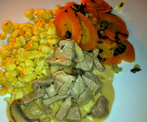

Zürcher Geschnetzeltes
5,5 von 6Backofen auf 80 °C vorheizen. Eine Platte mitwärmen. Zwiebel hacken. Champignons in feine Scheiben schneiden. Kalbsgeschnetzeltes mit Salz und Pfeffer würzen. In einer Bratpfanne im Öl in zwei Portionen anbraten. Auf die Platte geben und im Ofen 15 Minuten nachgaren.
Butter im Bratsatz schmelzen. Zwiebel darin glasig dünsten. Champignons dazugeben und kurz mitdünsten. Alles mit Mehl bestäuben und gut mischen. Mit Weisswein ablöschen und zur Hälfte einkochen lassen. Kalbsfond und Vollrahm dazugiessen. Die Sauce bei guter Hitze sämig einkochen lassen. Mit Salz und Pfeffer abschmecken. Das Fleisch in die Sauce geben und noch gut heiss werden lassen. Peterslilie hacken. Geschnetzeltes mit Petersilie garnieren.
